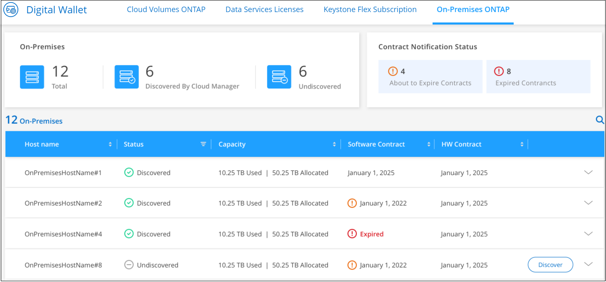

문서 변경 요청
문서 변경 요청 이 페이지 편집
이 페이지 편집 기여하는 방법 자세히 알아보기
기여하는 방법 자세히 알아보기사내 ONTAP 클러스터 검색
Cloud Manager를 사용하면 사내 환경, NetApp 프라이빗 스토리지 구성 및 IBM 클라우드에서 ONTAP 클러스터를 검색할 수 있습니다. 온프레미스 클러스터를 Cloud Manager Canvas에 추가하면 Cloud Volumes ONTAP 및 기타 클라우드 스토리지 솔루션과 동일한 도구를 사용하여 이러한 클러스터를 관리할 수 있습니다.
이러한 시스템에서 스토리지를 프로비저닝할 수 있을 뿐만 아니라 Cloud Manager에 이러한 시스템을 추가하면 Digital Wallet에서 하드웨어 및 소프트웨어 계약 상태 정보를 쉽게 볼 수 있고, 해당 클러스터에 중요한 클라우드 기반 서비스를 구성할 수 있습니다. 여기에는 클라우드로 데이터 복제, 클라우드에 데이터 백업, 콜드 데이터를 클라우드에 계층화, 해당 데이터에 대한 규정 준수 검사 실행 등이 포함됩니다.
요구 사항
-
클라우드 공급자 또는 구내에 설치된 커넥터.
콜드 데이터를 클라우드에 계층화하려면 콜드 데이터를 계층화할 위치에 따라 Connector의 요구사항을 검토해야 합니다.
-
클러스터를 Cloud Manager에 추가하는 admin 사용자 계정의 클러스터 관리 IP 주소 및 암호
Cloud Manager는 HTTPS를 사용하여 ONTAP 클러스터를 검색합니다. 사용자 지정 방화벽 정책을 사용하는 경우 다음 요구 사항을 충족해야 합니다.
-
커넥터 호스트는 포트 443을 통한 아웃바운드 HTTPS 액세스를 허용해야 합니다.
Connector가 클라우드에 있는 경우 모든 아웃바운드 통신은 미리 정의된 보안 그룹에서 허용됩니다.
-
ONTAP 클러스터는 포트 443을 통한 인바운드 HTTPS 액세스를 허용해야 합니다.
기본 "관리" 방화벽 정책은 모든 IP 주소에서 인바운드 HTTPS 액세스를 허용합니다. 이 기본 정책을 수정하거나 자체 방화벽 정책을 만든 경우 HTTPS 프로토콜을 해당 정책에 연결하고 Connector 호스트에서 액세스를 활성화해야 합니다.
-
-
유효한 NetApp Support 사이트 자격 증명 세트입니다. 자세한 내용은 를 참조하십시오 "NSS 계정을 Cloud Manager에 추가합니다".
검색된 클러스터와 검색되지 않은 온프레미스 클러스터 보기
Cloud Manager의 Digital Wallet 또는 Discovery 서비스를 사용하여 지원 계약 중인 온프레미스 ONTAP 클러스터를 확인, 검색 및 관리할 수 있습니다.
Digital Wallet_에서 온프레미스 클러스터 및 라이센스 세부 정보를 보려면 다음을 수행하십시오.
-
Cloud Manager에서 * Digital Wallet * 서비스를 선택합니다.
-
On-Premises ONTAP * 탭을 클릭합니다.

ONTAP 클러스터는 Cloud Manager에서 검색되었는지 여부와 함께 표시됩니다.
NetApp Support Site(NSS) 계정 자격 증명을 입력하라는 메시지가 표시되면 지원 대시보드 에 해당 자격 증명을 입력합니다. 계정을 추가하면 해당 계정에 포함된 클러스터가 표시됩니다.
Discovery 서비스 에서 온프레미스 클러스터 및 라이센스 세부 정보를 보려면 다음을 수행하십시오.
-
Cloud Manager에서 * Discovery * 서비스를 선택합니다.
-
필요한 경우 NSS 계정과 연결된 Active IQ 로그인을 선택합니다.

유효한 지원 계약이 있는 ONTAP 클러스터는 Cloud Manager에서 검색되었는지 여부와 함께 표시됩니다.

|
지원 계약이 만료되면 검색 페이지에서 시스템이 제거됩니다. 그러나 작업 환경에서 이러한 시스템을 계속 관리할 수 있습니다. 자세한 내용은 를 참조하십시오 "Active IQ 디지털 자문으로부터 지원 계약을 갱신하십시오". |
클러스터 정보 및 계약 세부 정보 보기
Digital Wallet_을 사용하여 클러스터 세부 정보와 하드웨어 및 소프트웨어 계약 상태를 볼 수 있습니다.
-
디지털 지갑 * 에서 * 온-프레미스 ONTAP * 탭을 클릭합니다.
소프트웨어 계약 및 하드웨어 계약 만료 날짜가 각 클러스터의 줄에 표시됩니다.
-
계약이 만료일에 가깝거나 만료된 경우 Cloud Manager 오른쪽 하단에 있는 채팅 아이콘을 클릭하여 계약 연장을 요청할 수 있습니다.
-
추가 세부 정보를 알고 싶은 클러스터의 경우 을 클릭합니다
 클러스터 정보를 확장합니다.
클러스터 정보를 확장합니다.
Cloud Manager에서 온프레미스 클러스터 검색
Cloud Manager에서 Digital Wallet, _Discovery_서비스 또는 _Canvas_에서 온프레미스 ONTAP 클러스터를 검색할 수 있습니다. 검색되면 Cloud Manager에서 작업 환경으로 사용할 수 있으므로 클러스터를 관리할 수 있습니다.
Digital Wallet에서 클러스터 검색
디지털 지갑에서 ONTAP 클러스터를 검색하여 작업 환경으로 추가할 수 있습니다.
-
디지털 지갑 * 에서 * 온-프레미스 ONTAP * 탭을 클릭합니다.

-
Cloud Manager를 통해 관리할 클러스터에 대해 * 검색 * 을 클릭합니다.
-
Discover ONTAP Cluster_페이지에서 admin 사용자 계정의 암호를 입력하고 * Discover * 를 클릭합니다.

클러스터 관리 IP 주소는 Digital Wallet의 정보를 기반으로 채워집니다.
클러스터 상태가 _온-프레미스 ONTAP_페이지에서 * 검색됨 * 으로 바뀝니다.
Cloud Manager는 클러스터를 검색하고 클러스터 이름을 작업 환경 이름으로 사용하여 Canvas의 작업 환경에 추가합니다.

오른쪽 패널에서 이 클러스터에 대한 서비스를 활성화하여 클러스터에서 데이터를 복제하고, 클라우드에 데이터 계층화를 설정하고, 볼륨을 클라우드에 백업하며, 볼륨에 대한 규정 준수 검사를 실행할 수 있습니다. 새 볼륨을 생성하거나 System Manager를 실행하여 고급 작업을 수행할 수도 있습니다.
검색 페이지에서 클러스터 검색
검색 페이지에서 ONTAP 클러스터를 검색하여 작업 환경으로 추가할 수 있습니다.
-
Discovery * 페이지에서 * Cluster Inventory * 탭을 클릭합니다.

-
Cloud Manager를 통해 관리할 클러스터에 대해 * 검색 * 을 클릭합니다.
-
Choose a Location_page * On-Premises ONTAP * 가 미리 선택되어 있으므로 * Continue * 를 클릭합니다.
-
ONTAP 클러스터 세부 정보 _ 페이지에서 admin 사용자 계정의 암호를 입력하고 * 추가 * 를 클릭합니다.

클러스터 관리 IP 주소는 Active IQ의 정보를 기반으로 채워집니다.
-
Details & Credentials_ 페이지에서 클러스터 이름이 작업 환경 이름으로 추가되므로 * Go * 를 클릭합니다.
Cloud Manager는 클러스터를 검색하고 클러스터 이름을 작업 환경 이름으로 사용하여 Canvas의 작업 환경에 추가합니다.
오른쪽 패널에서 이 클러스터에 대한 서비스를 활성화하여 클러스터에서 데이터를 복제하고, 클라우드에 데이터 계층화를 설정하고, 볼륨을 클라우드에 백업하며, 볼륨에 대한 규정 준수 검사를 실행할 수 있습니다. 새 볼륨을 생성하거나 System Manager를 실행하여 고급 작업을 수행할 수도 있습니다.
Canvas 페이지에서 클러스터를 검색하는 중입니다
ONTAP 클러스터를 검색하고 Canvas 페이지에서 이를 작업 환경으로 추가할 수 있습니다. 이 단계는 클러스터가 현재 지원 계약이 없기 때문에 Digital Wallet 또는 Discovery 페이지에 나열되지 않은 경우에 사용할 수 있습니다.
-
Canvas 페이지에서 * 작업 환경 추가 * 를 클릭하고 * 온-프레미스 ONTAP * 를 선택합니다.
-
메시지가 표시되면 연결선을 만듭니다.
자세한 내용은 위의 링크를 참조하십시오.
-
ONTAP 클러스터 세부 정보 _ 페이지에서 클러스터 관리 IP 주소, admin 사용자 계정의 암호를 입력하고 * 추가 * 를 클릭합니다.
-
Details & Credentials_페이지에서 작업 환경의 이름과 설명을 입력한 다음 * Go * 를 클릭합니다.
Cloud Manager는 클러스터를 검색하고 Canvas의 작업 환경에 추가합니다.
오른쪽 패널에서 이 클러스터에 대한 서비스를 활성화하여 클러스터에서 데이터를 복제하고, 클라우드에 데이터 계층화를 설정하고, 볼륨을 클라우드에 백업하며, 볼륨에 대한 규정 준수 검사를 실행할 수 있습니다. 새 볼륨을 생성하거나 System Manager를 실행하여 고급 작업을 수행할 수도 있습니다.